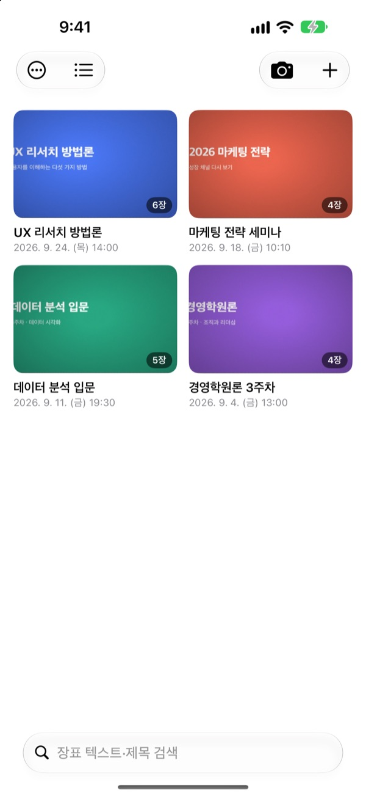
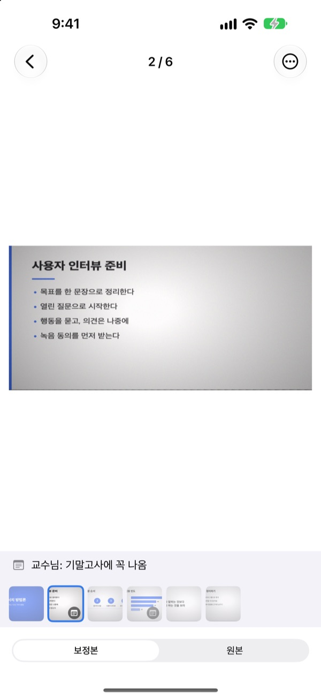
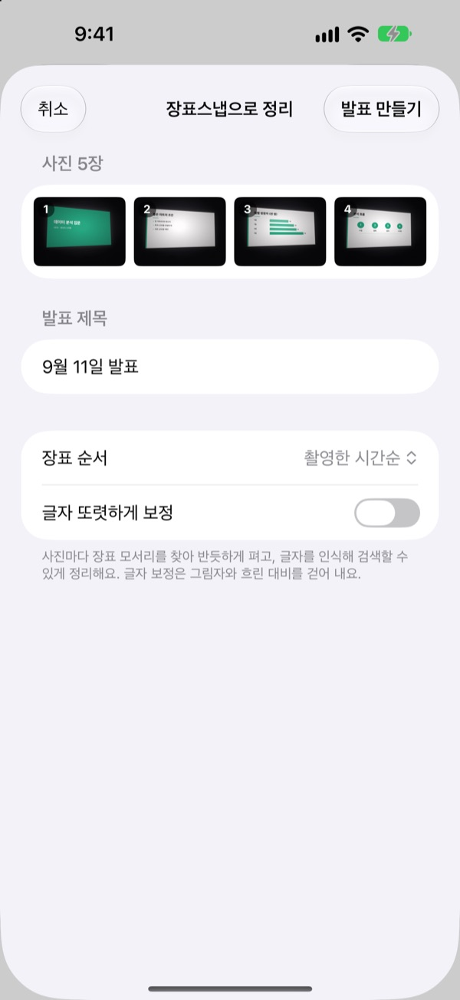
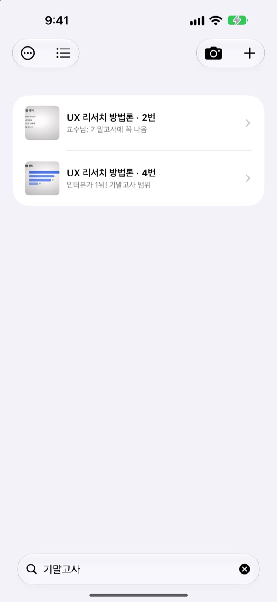

옆자리에서 찍어도
정면에서 본 장표로
카메라가 장표의 네 모서리를 찾아 반듯하게 펴고 배경은 잘라 냅니다. 이어서 찍은 장표는 발표 하나로 모입니다.
한 번 구매하면 모든 기능을 씁니다. 구독도 계정도 없습니다.

직접 펴 보세요
강의실 옆자리에서 비스듬히 찍은 사진입니다. 초록 선이 장표의 네 모서리를 찾은 자리입니다.
복습하려고 사진첩을 열었는데 장표를 못 찾은 적 있나요?
뒷자리에서 찍은 장표는 늘 비스듬하고, 셀카와 영수증 사이에 흩어져 있습니다. 조용한 강의실에서는 셔터 소리가 신경 쓰여 찍기도 망설여집니다. 장표스냅은 소리 없이 찍고, 반듯하게 펴서, 발표별로 모아 둡니다.
찍는 순간 반듯하게
카메라가 장표의 네 모서리를 실시간으로 찾아 초록색으로 알려 줍니다. 비스듬히 찍어도 정면에서 본 것처럼 펴고 배경은 잘라 냅니다.
셔터 소리 없이 찍습니다. 자동 촬영을 켜 두면 장표가 바뀔 때마다 알아서 담고, 흔들린 컷은 건너뜁니다.

이미 찍은 사진도 한 번에
사진 앱에서 강의 사진을 여러 장 골라 장표스냅으로 공유하면, 찍은 순서대로 펴서 발표 하나로 정리합니다.글자 또렷하게 보정을 켜면 그림자와 흐린 대비도 걷어 냅니다.

기억나는 단어 하나로 찾기
찍은 장표의 글자를 기기 안에서 읽어 둡니다. 몇 주 지나도 단어 하나로 그 장표를 찾을 수 있습니다.
장표마다 남긴 메모도 함께 찾아집니다. 기말고사라고 적어 두면 시험 범위가 한 번에 모입니다.

시작은 세 단계면 됩니다
- 1
카메라를 엽니다
목록의 카메라 버튼, 홈 화면 위젯, 잠금 화면 어디서든 열 수 있습니다.
- 2
장표를 화면에 담습니다
모서리가 초록색으로 잡히면 셔터를 누르거나 자동 촬영에 맡깁니다.
- 3
발표별로 꺼내 봅니다
검색하고, 메모를 남기고, 복습용 PDF로 내보냅니다.
발표 하나로 할 수 있는 것
- 녹음
- 찍으면서 녹음하면 장표를 열 때 그 장표를 찍던 순간부터 들을 수 있습니다
- 받아쓰기
- 녹음을 글로 옮겨 장표마다 그때 한 말을 보여 주고, 검색에도 씁니다
- AI 요약
- 장표 글자와 받아쓴 말로 발표를 요약합니다 (Apple Intelligence를 지원하는 iOS 26 이상 기기)
- 한 장씩, 두 장씩, 네 장씩 배치한 복습용 PDF
- Markdown
- Notion이나 Obsidian에 넣을 수 있는 .zip
- PowerPoint
- .pptx로 내보내고, 받아쓴 말은 발표자 노트에 넣습니다
- 발표 합치기
- 여러 발표를 골라 하나로 이어 붙입니다
- iCloud 동기화
- 켜면 같은 Apple ID의 다른 기기에서도 발표를 봅니다. 처음에는 꺼져 있습니다
- 위젯
- 홈 화면과 잠금 화면에서 바로 카메라를 엽니다
글자 인식, 받아쓰기, AI 요약은 모두 기기 안에서 처리합니다.
한 번 사면 모든 기능
장표스냅
- 소리 없는 촬영, 자동 촬영, 반듯하게 펴기
- 사진 앱에서 여러 장 가져오기
- 발표별 정리, 글자와 메모 검색
- 녹음, 받아쓰기, AI 요약
- PDF, Markdown, PowerPoint 내보내기
- iCloud 동기화와 위젯
팁 (선택)
- 앱이 도움이 됐다면 개발자에게 작은 팁을 보낼 수 있습니다
- 팁은 기능을 열지 않습니다. 보내지 않아도 모든 기능을 그대로 씁니다
내 정보 화면에서 보낼 수 있습니다.
구독이 없고, 기능을 여는 추가 결제도 없습니다. 가격은 App Store에서 확인해 주세요.
자주 묻는 질문
장표는 어떻게 찍나요?
카메라를 열고 장표를 화면에 맞추면 모서리가 초록색으로 잡힙니다. 그때 셔터를 누르면 됩니다. 자동 촬영을 켜 두면 장표가 바뀔 때마다 알아서 다음 장을 담습니다.
셔터 소리가 나나요?
나지 않습니다. 카메라 화면을 그대로 담는 방식이라 어느 나라에서 쓰든 소리 없이 찍힙니다.
여러 장이 왜 발표 하나로 묶이나요?
마지막으로 찍은 지 5분이 지나기 전에 이어서 찍으면 같은 발표로 보고 한곳에 모읍니다. 목록에서 제목을 눌러 이름을 바꿀 수 있고, 따로 찍힌 발표는 발표 합치기로 하나로 이을 수 있습니다.
이미 찍어 둔 사진을 넣을 수 있나요?
네. 사진 앱에서 여러 장을 골라 공유 버튼으로 장표스냅을 고르거나, 목록의 ＋ 버튼에서 사진에서 가져오기를 누르세요. 찍은 순서대로 펴서 발표 하나로 정리합니다.
모서리가 잘못 잡혔어요.
장표를 연 뒤 ⋯ 메뉴의 모서리 조정에서 네 모서리를 끌어 다시 맞추세요. 자동 감지로 다시 찾게 하거나 전체 영역으로 사진 전체를 쓸 수도 있습니다. 원본은 늘 함께 보관되어 언제든 다시 펼 수 있습니다.
장표 속 글자를 검색할 수 있나요?
목록 위쪽 검색창에 단어를 넣으면 장표 글자, 발표 제목, 메모, 받아쓴 말에서 찾아 그 장표로 바로 이동합니다. 글자 인식은 기기 안에서 이뤄집니다.
PDF로 어떻게 내보내나요?
발표 안의 공유 메뉴에서 PDF로 내보내기를 고르고 한 장, 두 장, 네 장 중 배치를 고르세요. 공유 시트에서 파일에 저장하거나 다른 앱으로 보낼 수 있습니다.
장표 순서를 바꾸거나 지우려면요?
발표 안의 장표를 길게 눌러 끌면 순서가 바뀝니다. 길게 누르면 나오는 메뉴에서 한 장씩 지우거나 공유하고, 선택 모드에서는 여러 장을 한 번에 지웁니다.
녹음과 AI 요약은 어떻게 쓰나요?
카메라 화면 위쪽의 녹음을 켜고 찍으면 장표마다 그때의 소리가 붙습니다. 발표 노트의 AI로 요약하기는 장표 글자와 받아쓴 말로 발표를 요약합니다. AI 요약은 Apple Intelligence를 지원하는 iOS 26 이상 기기에서만 됩니다.
내 장표와 녹음은 어디에 저장되나요?
모두 기기 안에 저장됩니다. 내 정보에서 발표 동기화를 켰을 때만 내 iCloud에 올라가고, 계정 가입은 필요 없습니다. 자세한 내용은 개인정보처리방침을 참고해 주세요.
문의, 버그 제보, 기능 제안은 leeo@kakao.com로 보내 주세요.